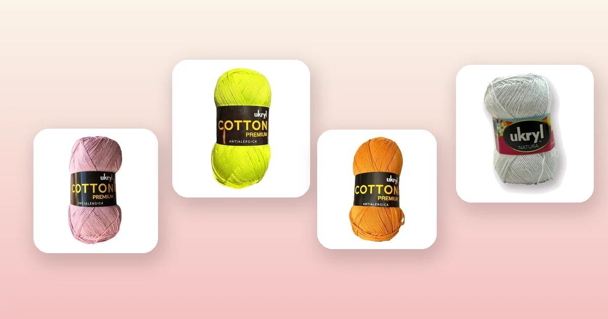

Proyectos de crochet
Cómo tejer posavasos a crochet paso a paso
Los posavasos a crochet son el proyecto perfecto para principiantes: se tejen rápido, usan poco hilo y quedan preciosos como regalo. En esta guía te enseñamos 4 diseños — circular básico, cuadrado, con flor y hexagonal —, qué hilo usar, las medidas ideales y todos los trucos para que queden planos y parejos desde la primera vez.

Materiales y qué hilo elegir
Los posavasos necesitan un hilo firme que absorba la humedad y no resbale sobre la mesa. El algodón es imbatible para esto. Necesitas:
- Ganchillo de 3 a 3,5 mm para hilo de algodón 8/6. Un ganchillo un número menor al recomendado en la etiqueta del hilo da un tejido más firme, ideal para posavasos. Si no estás segura, consulta la guía de qué aguja o ganchillo usar.
- Aguja lanera para esconder las hebras.
- Marcador de puntos (o un trozo de hilo de otro color) para marcar el inicio de cada vuelta.
- Tijeras.
El hilo ideal es algodón 100%. Un solo ovillo alcanza para más de 10 posavasos, así que es de los proyectos más económicos que puedes tejer. Estas son las mejores opciones:
- Hilo de Algodón Palo Rosa: un color suave y elegante, perfecto para posavasos de regalo. 100 g y 200 m por ovillo.
- Hilo de Algodón Menta: fresco y moderno, ideal para juegos de posavasos de verano o para combinar con una mesa blanca. 100 g y 200 m.
- Hilo de Algodón Mostaza: un tono cálido y versátil que combina con madera natural. 100 g y 200 m.
- Ukryl Natura Blanco: 50% algodón y 50% acrílico con 200 m por ovillo. Excelente si quieres un posavasos más suave al tacto. Toda la línea en lana Ukryl.
Para entender las diferencias entre fibras, revisa la guía de tipos de lana para tejer.
Medidas ideales para posavasos
El tamaño del posavasos depende de los vasos que usas. Un posavasos debe sobresalir entre 1 y 2 cm alrededor del borde del vaso para proteger la mesa y verse proporcionado.
| Tipo de vaso | Base del vaso | Posavasos ideal |
|---|---|---|
| Vaso de agua / jugo | 6 – 7 cm | 9 – 10 cm |
| Taza de café / té | 6 – 8 cm | 10 – 11 cm |
| Copa de vino | 7 – 8 cm | 10 – 12 cm |
| Tazón / mug grande | 8 – 10 cm | 12 – 14 cm |
La medida más versátil es 10 cm: cabe cualquier vaso o taza estándar. Si tejes un juego de regalo, 10 cm es la apuesta segura.
Diseño 1: posavasos circular básico
El posavasos más fácil de todos. Se teje en espiral con aumentos regulares. Es perfecto como primer proyecto si recién estás aprendiendo.
- Anillo mágico: haz un anillo mágico y teje 6 puntos bajos dentro. Marca el primer punto con un marcador.
- Vuelta 2: 2 puntos bajos en cada punto (12 puntos).
- Vuelta 3: *1 punto bajo, 2 puntos bajos en el siguiente.* Repite 6 veces (18 puntos).
- Vuelta 4: *2 puntos bajos, 2 puntos bajos en el siguiente.* Repite 6 veces (24 puntos).
- Vuelta 5: *3 puntos bajos, 2 puntos bajos en el siguiente.* Repite 6 veces (30 puntos).
- Vuelta 6 (opcional, para 12 cm): *4 puntos bajos, 2 puntos bajos en el siguiente.* Repite 6 veces (36 puntos).
- Cierre: punto raso en el siguiente punto. Corta el hilo dejando 10 cm y pasa la hebra por el último punto.
Con 5 vueltas obtienes un posavasos de ~10 cm; con 6 vueltas, ~12 cm. Si no sabes hacer el anillo mágico, consulta puntos básicos de crochet.
Diseño 2: posavasos cuadrado
Un posavasos cuadrado se teje en filas de ida y vuelta. Es tan fácil como el circular pero queda más moderno y minimalista.
- Cadena base: teje 20 cadenas (para un posavasos de ~10 cm con ganchillo de 3,5 mm). Ajusta según tu muestra.
- Fila 1: 1 punto bajo en la segunda cadena desde el ganchillo, 1 punto bajo en cada cadena hasta el final (19 puntos bajos).
- Fila 2 en adelante: cadena 1, gira. 1 punto bajo en cada punto hasta el final. Repite hasta que la pieza sea cuadrada (mide con una regla: largo = ancho).
- Borde: sin cortar el hilo, teje 1 vuelta de punto bajo alrededor de todo el cuadrado. En cada esquina, teje 3 puntos bajos en el mismo punto para que gire plano.
- Cierre: punto raso en el primer punto bajo de la vuelta.
Un posavasos cuadrado necesita entre 18 y 22 filas, dependiendo de tu tensión. Mide con frecuencia.
Diseño 3: posavasos con flor central
Un posavasos decorativo con una flor de 6 pétalos en el centro. Se teje en vueltas cerradas y es perfecto para usar dos colores. Si quieres practicar flores, revisa primero la guía de flores a crochet.
- Color A (centro de la flor): anillo mágico, 12 puntos altos. Cierra con punto raso.
- Vuelta 2 (pétalos): *cadena 2, 3 puntos altos en el siguiente punto, cadena 2, punto raso en el siguiente.* Repite 6 veces (6 pétalos). Corta el hilo.
- Color B (fondo): une el color B con punto raso en el espacio entre dos pétalos. *Cadena 3, punto bajo en el espacio entre los siguientes 2 pétalos.* Repite 6 veces (6 arcos de cadena 3 por detrás de los pétalos).
- Vuelta 4: en cada arco de cadena 3, teje 5 puntos altos. Cierra con punto raso (30 puntos altos).
- Vuelta 5: cadena 1, *1 punto bajo en cada punto alto.* Cierra (30 puntos bajos). Corta y remata.
Queda hermoso con la flor en Palo Rosa y el fondo en Blanco, o la flor en Mostaza con fondo Menta.
Diseño 4: posavasos hexagonal
El hexágono es una forma elegante que queda diferente sin ser difícil. Se teje igual que un círculo pero con 6 esquinas marcadas.
- Anillo mágico: 6 puntos bajos en el anillo. Cierra con punto raso.
- Vuelta 2: cadena 1, *1 punto bajo, cadena 1.* Repite 6 veces. Cierra (6 puntos bajos + 6 cadenas).
- Vuelta 3: *en el espacio de cadena 1: 1 punto bajo, cadena 1, 1 punto bajo (esquina). 1 punto bajo en el punto bajo.* Repite 6 veces.
- Vuelta 4: punto bajo en cada punto, y en cada esquina (espacio de cadena 1): 1 punto bajo, cadena 1, 1 punto bajo. Repite.
- Vuelta 5: repite el patrón de la vuelta 4 hasta alcanzar ~10 cm de vértice a vértice.
Los posavasos hexagonales encajan unos con otros sin dejar espacios, así que si pones varios en la mesa forman un mosaico decorativo.
Terminaciones y bloqueo
Un buen remate marca la diferencia entre un posavasos artesanal y uno que parece profesional:
- Esconder hebras: con la aguja lanera, pasa cada hebra por dentro del tejido en zigzag durante al menos 4 cm. Corta el excedente al ras. En posavasos que se van a lavar mucho, pasa la hebra en dos direcciones para mayor seguridad.
- Bloqueo húmedo: moja los posavasos en agua tibia, escúrrelos en una toalla y déjalos secar planos sobre una superficie limpia. El algodón toma la forma al secarse. Si un posavasos se ondula, fíjalo con alfileres mientras se seca.
- Almidón casero (opcional): para posavasos más rígidos, mézclalos en una solución de 1 cucharada de maicena en 1 taza de agua tibia. Escurre y seca plano. El almidón se va con el lavado, así que hay que reaplicar.
Para más técnicas de cuidado, consulta cómo lavar y cuidar la lana.
Ideas de combinaciones de colores
Un juego de posavasos se ve mejor cuando los colores se complementan. Tres ideas que funcionan con los hilos disponibles:
- Tonos neutros: Arena + Blanco + Crudo. Elegante y combina con cualquier mesa. Ideal para regalar sin saber la decoración del receptor.
- Pasteles: Palo Rosa + Menta + Celeste + Amarillo Pastel. Un posavasos de cada color, todos en la misma forma.
- Cálidos: Mostaza + Terracota + Arena. Perfecto para mesas de madera y decoración bohemia.
Un juego de 4 o 6 posavasos en colores combinados usa menos de 50 g de hilo en total. Un solo ovillo te da para regalar dos juegos completos.
Posavasos como regalo: presentación
Los posavasos a crochet son un regalo hecho a mano que la gente realmente usa. Algunas ideas de presentación:
- Juego de 4 apilados: apila los posavasos, átalos con un lazo de hilo del mismo algodón y agrega una etiqueta con una nota. Cabe en una bolsa de tela pequeña.
- Envueltos en papel kraft: envuelve el juego en papel kraft con un sello o sticker personalizado. El estilo artesanal combina con el regalo.
- Con una taza: coloca un posavasos dentro de una taza bonita y agrega un sobre de té o café de especialidad. Es un kit de regalo listo.
Si te gusta tejer regalos, los posavasos combinan perfecto con una canasta a crochet para presentarlos.
Errores comunes y cómo evitarlos
- El posavasos se forma como cuenco. Faltan aumentos: estás perdiendo el aumento en alguna parte de la vuelta. Usa un marcador para señalar el primer punto y cuenta al final de cada vuelta.
- El posavasos se ondula. Demasiados aumentos. Si sigues el patrón de 6 aumentos por vuelta en punto bajo y se ondula, prueba con un ganchillo un número menor para apretar el tejido.
- El cuadrado no es cuadrado. Mide el largo y el ancho con cinta métrica cada 5 filas. La tensión en las filas de ida puede ser distinta a las de vuelta; si pasa, teje un poco más suelto o más apretado en las filas que te quedan disparejas.
- Los bordes se ven desprolijos. En posavasos cuadrados, el punto más común de prolijidad es la primera y última cadeneta de cada fila. Teje la cadena de giro con la misma tensión que el resto de la fila.
- El hilo se deshilacha. El algodón de mala calidad se abre en hebras. Un hilo de algodón mercerizado o un 8/6 de buena torsión no tiene ese problema. Todos los hilos de algodón de VendoLanas son de buena torsión.